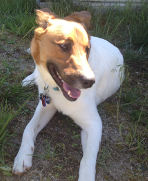

 Roscoe
Roscoe
- - An extremely happy pup after one of the many walks I have taken him!
Lilac City Dog Walking & Care was established in June of 2012 by Lynn Burt, a full-time college student in Spokane, Washington. She has had a lifetime of experience with small animals, being the daughter of a veterinarian in El Paso, Texas. Since she was a small child she had the luxury of being allowed to bring home every stray animal she found and, with her father's help, nursing them back to health. She deeply cares for and bonds easily with dogs, cats, horses, and basically most animals she comes across. She has worked as veterinary technician, a groomer for large dogs, and in the veterinary field in general almost all her life.
The decision to build a company based on this love for dogs and cats and many other critters came when she decided to return to school for her Bachelor's Degree and wanted to work a job that brought not only flexibility, but mostly great joy. She is happiest when interacting with animals and will undoubtedly take extreme precaution and care when bonding with your furry loved ones!